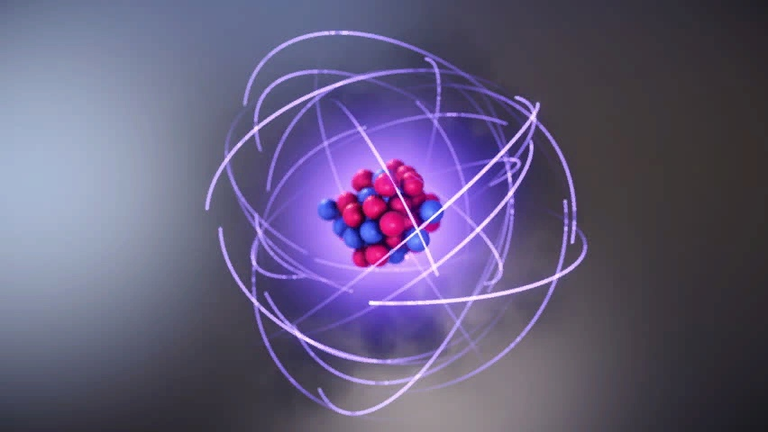
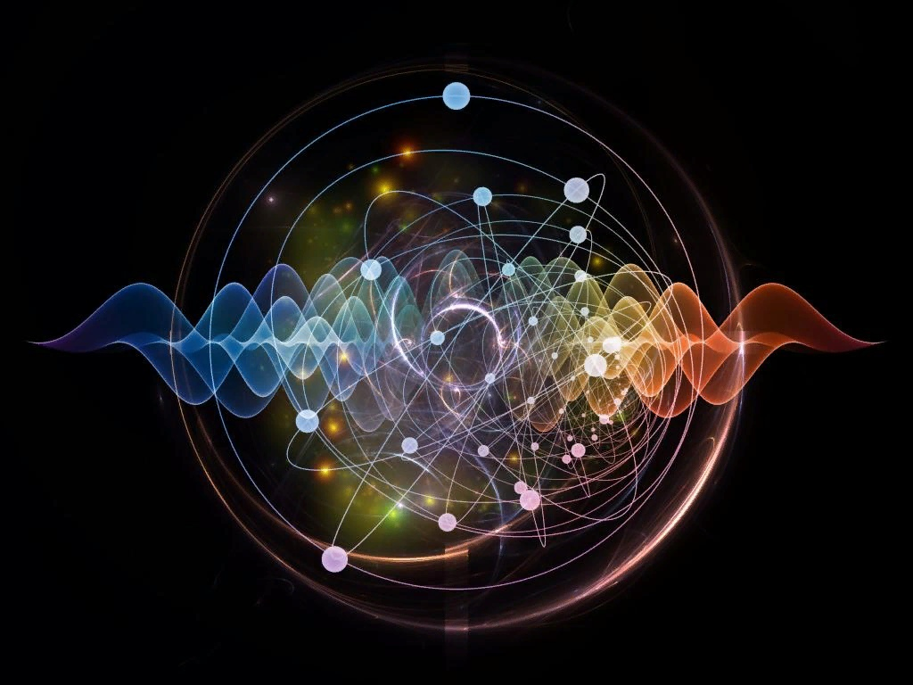
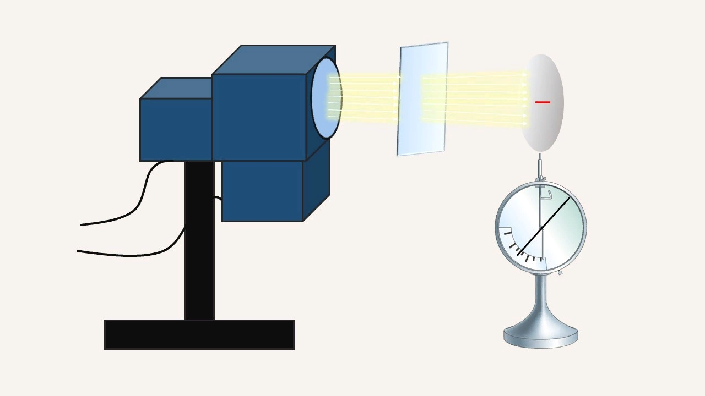
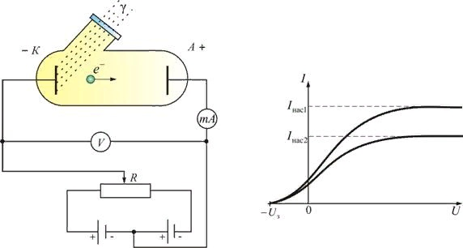

Ядерная физика — это раздел физики, в котором изучаются структура и свойства атомных ядер. Ядерная физика занимается также изучением взаимопревращения атомных ядер, совершающиеся как в результате радиоактивных распадов, так и в результате различных ядерных реакций. Основная ее задача связана с выяснением природы ядерных сил, воздействующих между нуклонами, и особенностей движения нуклонов в ядрах.

Современная ядерная физика разделяется на теоретическую и экспериментальную ядерную физику. Теоретическая ядерная физика изучает модели атомного ядра и ядерные реакции, она опирается на фундаментальные физические теории, созданные в процессе исследования физики микромира. Экспериментальная ядерная физика использует такие исследовательские средства, как ускорители заряженных частиц, ядерные реакторы, разнообразные детекторы частиц.

Корпускулярно-волновой дуализм. Фотоэффект Свет имеет двойственную корпускулярно-волновую природу, т. е. корпускулярно-волновой дуализм: Во-первых: он имеет волновые свойства; Во-вторых: он выступает в роли потока частиц — фотонов. Гипотеза А. Эйнштейна, которую он выдвинул в 1905 г.: электромагнитное излучение не только испускается квантами, но распространяется и поглощается в виде частиц (корпускул) электромагнитного поля — фотонов.

Фотоэффект — это явление взаимодействия электромагнитного излучения с веществом. Для твердых и жидких тел распознают внешний фотоэффект, при котором поглощение фотонов сопровождается вылетом электронов за пределы тела, и внутренний фотоэффект, при котором электроны, оставаясь в теле, изменяют свое энергетическое состояние.